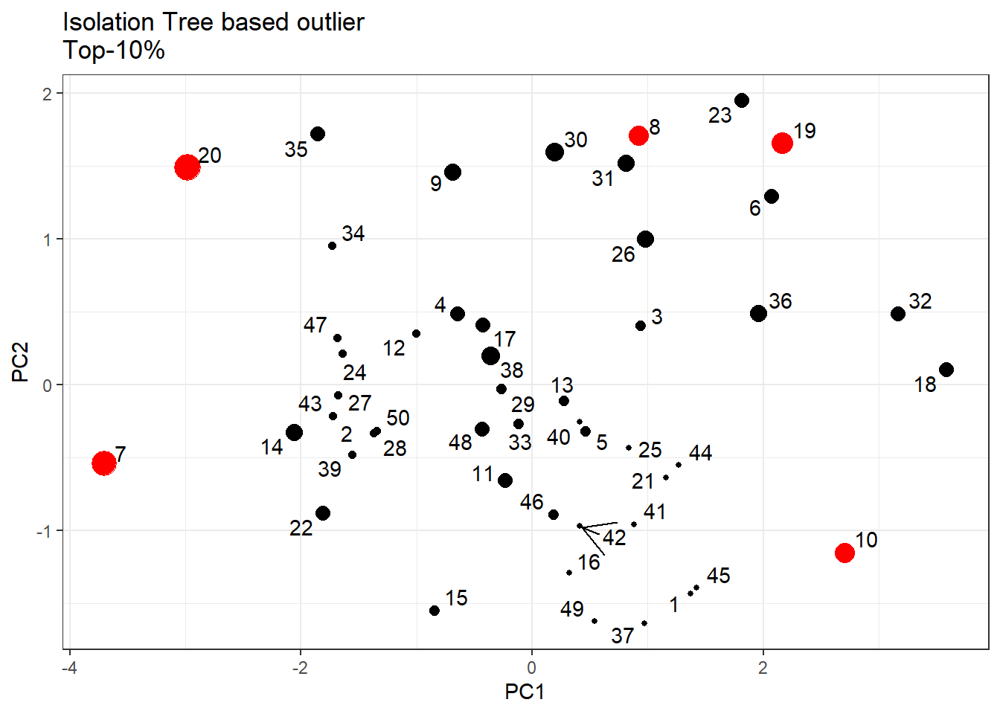
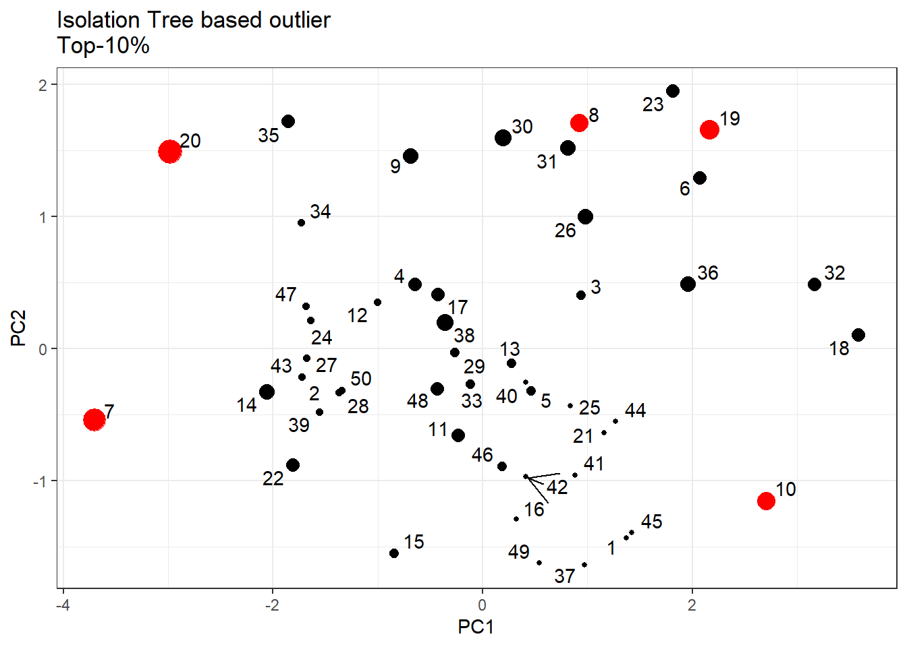

Chapter 40 Anomaly Detection
Anomalies play a significant role in the field of audit. As auditors start examining data whether it be financial statements, or transactions, or other relevant data, the detection of anomalies can provide valuable insights and help identify potential issues or irregularities. Anomalies often indicate the presence of fraudulent activities. Unusual or unexpected patterns in financial transactions or account balances may suggest potential fraud or misappropriation of assets. Auditors actively search for anomalies that may indicate fraudulent behavior, such as fictitious transactions, unauthorized access, or unusual changes in financial data.
Anomalies in the audit context serve as indicators of potential issues, including fraud, material misstatements, control weaknesses, compliance violations, and process inefficiencies. Detecting and investigating anomalies is crucial for auditors to provide accurate and reliable financial information, enhance internal controls, and support informed decision-making by stakeholders.
40.1 Definition and types of anomalies
Anomalies are patterns or data points that deviate significantly from the expected or normal behavior within a dataset. These are also known as outliers, novelties, or deviations and can provide valuable insights into unusual events or behavior in various domains.
Types of anomalies:
Point Anomalies: Individual data points that are considered anomalous when compared to the rest of the dataset. For example, a temperature sensor reading that is significantly different from the expected range.
Contextual Anomalies: Data points that are considered anomalous within a specific context or subset of the dataset. For instance, a sudden increase in obsolete website traffic.
Collective Anomalies: Groups of data points that exhibit anomalous behavior when analyzed together but might appear normal when considered individually. An example is a sudden drop in sales for multiple related products.
Anomaly detection, in R
40.2 Anomaly detection - by inspection
Several times, anomalies or outliers are detectable by observation. The summary() function prints the maximum, minimum, upper and lower quartiles, and the mean and median, and can give a sense for how far an extreme point lies from the rest of the data. E.g. Let’s visualise the mean annual temperatures in degrees Fahrenheit in New Haven, Connecticut, from 1912 to 1971, through a boxplot (Refer Figure 40.1. This data is available in base R, as nhtemp.
## Min. 1st Qu. Median Mean 3rd Qu. Max.
## 47.90 50.58 51.20 51.16 51.90 54.60The easiest way to get a sense for how unusual a particular value is is by using a graphical summary like a boxplot. In R, this is created using the boxplot function. The boxplot function takes a column of values as an input argument, here illustrated with the temperature data, and produces a box and whiskers representation of the distribution of the values. The extreme values are represented as distinct points, making them easier to spot. We can also make use of ggplot2. Examples from both base R and ggplot2 are shown in Figure 40.1.
boxplot(nhtemp, main = "Box plot of nhtemp data")
ggplot(iris, aes(Species, Petal.Length, color = Species )) +
geom_boxplot(outlier.colour = "red", outlier.size = 2) +
theme_bw() +
labs(title = "Petal Lengths in Iris Data")
Figure 40.1: Outliers through Boxplot
It’s important to note that a point anomaly is not necessarily always extreme. A point anomaly can also arise as an unusual combination of values across several attributes.
A collective anomaly, on the other hand, is a collection of similar data instances that can be considered anomalous together when compared to the rest of the data. For example, a consecutive 5 day period of high temperatures are shown by the red points in the plot. These daily temperatures are unusual because they occur together, and are likely caused by the same underlying weather event. Refer Figure 40.2.
Figure 40.2: Collective Anomalies
40.3 Grubb’s Test
We saw that visual assessment of outliers works well when the majority of data points are grouped together and rest of them lie separate. In statistics there are several tests to detect anomalies. Grubb’s Test is one of these. Grubb’s test assesses whether the point that lies farthest from the mean in a dataset could be an outlier. This point will either be the largest or smallest value in the data. This test is however based on assumption that data points are normally distributed. So before proceeding for this test, we must be sure that there is a plausible explanation for this assumption. (We can check normality of data points by plotting a histogram. For other methods please refer to chapter on linear regression.)
Let’s run this test on nhtemp data example, which we have already seen in 40.1 (Left). So let’s check its normality assumption.

Figure 40.3: Histogram for Grubb’s test
In figure 40.3 we can see that our assumption is nearly satisfied. Let’s run the test.
##
## Grubbs test for one outlier
##
## data: nhtemp
## G = 2.71806, U = 0.87266, p-value = 0.1539
## alternative hypothesis: highest value 54.6 is an outlierAs p value is 0.15 we do not have strong evidence to reject null hypothesis that extreme maximum value is an outlier.
40.4 Seasonal Hybrid ESD Algorithm
As we have seen that above test may not be appropriate for anomaly detection (normality assumption as well as detection of extreme values only), particularly detecting anomalies from a time series that may have seasonal variations. We may install AnomalyDetection package development version from github using devtools::install_github("twitter/AnomalyDetection"). Example: in JohnsonJohnson data having quarterly sales data, we can use the following syntax.
#devtools::install_github("twitter/AnomalyDetection")
library(AnomalyDetection)
AnomalyDetectionVec(as.vector(JohnsonJohnson),
period = 4, # Sesaonality
plot = TRUE, # set FALSE when plot not needed
direction = 'both' # set 'pos' for higher values
# or 'neg' for lower values
)## $anoms
## index anoms
## 1 74 12.06
## 2 75 12.15
## 3 77 14.04
## 4 78 12.96
## 5 79 14.85
## 6 81 16.20
## 7 82 14.67
## 8 83 16.02
##
## $plot
Figure 40.4: Seasonal Hybrid ESD Algorithm
In Figure 40.4, we can see that in output $anoms containing anomalies are denoted in blue dots.
40.5 k-Nearest Neighbour Distance Score
One of greatest limitation of above two methods was that, these were applicable on univariate data series, whereas, in real world, data analysis will rarely be univariate. The knn technique works on multivariate data, but for visulaisation purposes, we will first visulaise the results on bivariate data only.
K-Nearest Neighbour or KNN is a distance-based classifier, meaning that it implicitly assumes that the smaller the distance between two points, the more similar they are. For bivariate data, we can understand the algorithm by plotting the data-points in a two dimensional scatter plot. Now as the distance between any two points are usually calculated using Euclidean Distance Metric, we should ensure that the data is normalised/scaled before proceeding for distance calculation.
Problem Statement-1: Let us try to identify outliers in virginica Species’ flower measurements. So let’s prepare the data. We will make use of scale function available in base R, to normalise the data. Remember that scale returns a matrix, so we may need to convert it into data.frame while using ggplot2.
Let us visualise the data (in first two dimensions only). However, as our data is scaled already, we can try to visualise all the dimensions using a boxplot. See both figures in 40.5. The points/ouliers have been numbered (on the basis of row numbers) for interpretaion purposes.
df %>%
as.data.frame() %>%
mutate(row = row_number()) %>%
ggplot(aes(Sepal.Length, Sepal.Width)) +
geom_point(color = "seagreen") +
ggrepel::geom_text_repel(aes(label = row), arrow = grid::arrow()) +
theme_bw()
# Helper Function
find_outlier <- function(x) {
return(x < quantile(x, .25) - 1.5*IQR(x) | x > quantile(x, .75) + 1.5*IQR(x))
}
df %>%
as.data.frame() %>%
mutate(row = row_number()) %>%
pivot_longer(-row, names_to = "Dimension", values_to = "Values") %>%
group_by(Dimension) %>%
mutate(outlier = ifelse(find_outlier(Values), row, NA)) %>%
ggplot(aes(Dimension, Values)) +
geom_boxplot(outlier.colour = "red") +
geom_text(aes(label=outlier), na.rm=TRUE, hjust=-.5) +
theme_bw()
Figure 40.5: Sepal Length Vs. Widths in Virginica
Now, let’s proceed to identify outliers in R. We will make use of get.knn function from FNN package. However, k parameter is required beforehand.
# Load the library
library(FNN)
# get kNN object, using k = 5
viginica_knn <- FNN::get.knn(df[, 1:2], 5)The knn object created above will have two sub-objects (both matrices having columns equal to chosen k), one having nearest neighbors’ indices and another having distances from those. Let’s view their top 6 rows.
## [,1] [,2] [,3] [,4] [,5]
## [1,] 37 16 49 11 45
## [2,] 2 15 22 35 14
## [3,] 30 40 42 8 13
## [4,] 34 27 29 33 28
## [5,] 5 17 46 38 41
## [6,] 36 8 30 23 31## [,1] [,2] [,3] [,4] [,5]
## [1,] 0.3100808 0.3476803 0.3476803 0.4416741 0.6290499
## [2,] 0.0000000 0.3100808 0.4416741 0.5645648 0.6397904
## [3,] 0.1572625 0.4416741 0.4416741 0.4416741 0.4717874
## [4,] 0.3100808 0.3476803 0.3476803 0.3476803 0.4416741
## [5,] 0.0000000 0.0000000 0.3145250 0.3476803 0.4416741
## [6,] 0.1572625 0.5645648 0.6290499 0.6397904 0.6953605Using rowMeans we can calculate mean distance for each data point. The bigger this score is, the chances of that record being an outlier are relatively higher. Let’s also store that mean distance in a variable/column say score in main dataset, and visualise the results by setting the point-size with this mean distance (actually its square root). In Figure 40.6, we may notice that points lying far away are bigger becuase their chances of being outliers is high.
score <- rowMeans(viginica_knn$nn.dist)
df %>%
as.data.frame() %>%
mutate(row = row_number(),
score = score) %>%
ggplot(aes(Sepal.Length, Sepal.Width)) +
geom_point(aes(size = score),color = "seagreen") +
ggrepel::geom_text_repel(aes(label = row), arrow = grid::arrow()) +
theme_bw() +
labs(title = "KNN method of outlier")Figure 40.6: k-Nearest Neighbour Distance
Now, we can run the algorithm to find the outlier on the basis of all variables in the dataset.
virginica_knn <- FNN::get.knn(df, 5)
score <- rowMeans(virginica_knn$nn.dist)
# Which point is farthest-Outlier
which.max(score)## [1] 3240.6 Local Outlier Factor
As against kNN which uses distances of k neighbors, this algorithm uses density of each data point vis-a-vis density of its nearest neighbors. kNN distance seems to be good at detecting points that are really far from their neighbors, sometimes called global anomalies, but sometimes fail to capture all of the points that might be considered anomalous like local anomalies. Local Anomalies may lie near to a cluster still they won’t be like their neighbors. To understand it better, see the plot in Figure 40.7 consisting of dummy data.

Figure 40.7: Local Outlier factor
The red points may be global outliers, being far from its immediate neigbors, yet the blue points may be local anomalies as these are not like their immediate neighbors and may be local anomalies.
As stated, LOF segregates the data points based on the ratio of density of that point with that of densities of its neighbors. A score > 1 thus indicates that the data point may be an anomaly. Let’s see that on same problem statement.
library(dbscan)
lof_score <- lof(df, 5)
df %>%
as.data.frame() %>%
mutate(row = row_number(),
score = lof_score) %>%
ggplot(aes(Sepal.Length, Sepal.Width)) +
geom_point(aes(size = score),color = "seagreen") +
ggrepel::geom_text_repel(aes(label = row), arrow = grid::arrow()) +
scale_size_continuous(guide = FALSE) +
theme_bw() +
labs(title = "LOF method of outlier")
df_prcomp <- prcomp(df, scale. = TRUE)
df %>%
as.data.frame() %>%
mutate(row = row_number(),
score = lof_score,
PC1 = df_prcomp$x[,1],
PC2 = df_prcomp$x[,2]) %>%
ggplot(aes(PC1, PC2)) +
geom_point(aes(size = score),color = "seagreen") +
ggrepel::geom_text_repel(aes(label = row), arrow = grid::arrow()) +
scale_size_continuous(guide = FALSE) +
theme_bw() +
labs(title = "LOF method of outlier\nVisualised on principal components")

Figure 40.8: LOF
Clearly, in Figure 40.8 (left), where we have plotted the data in 2 dimensions only despite that we have attempted to find the LOF on the basis of all four dimensions. We can see presence of local anomalies, within the clustered data points. E.g. points nos. 31, 23, etc. were earlier given more weight instead of point nos.15, 10, etc. which are now given more weight. However, if we want to visaulise it on first two principal components, we can do that (Refer Figure 40.8 (Right)). We can also verify this.
## [1] 32## [1] 7Histograms of both knn and LOF scores can also be drawn, as in Figure 40.9.
hist(score, breaks = 40,
main = "Histogram of KNN scores in IRIS-Virginica data")
hist(lof_score, breaks = 40,
main = "Histogram of LOF scores in IRIS-Virginica data")
Figure 40.9: Histogram - KNN(Left) and LOF (Right)
40.7 Isolation Trees/Forest
Isolation Forest is an unsupervised tree based model, which actually works on path length instead of distance or density measures. Tree based models use decision tree(s) to determine the value/class of an observation given its value. In other words, it determines or try to identify a path from the root node to a leaf node based on the value of the observation in question. Forest (or Random Forest) are actually collection of smaller trees and thus using ensemble learning methods to make decision, instead of a single complex tree.
Let us work on the same problem statement above. Firstly, we will build a single decision tree. WE will use a development version package isofor which can be downloaded using remotes::install_github("Zelazny7/isofor"). To build forest/tree we will use function iForest. Its argument nt will determine the number of trees to be built in ensemble. Another important argument is phi which determines the number of samples to draw without replacement to construct each tree. So let’s use nt = 1 and phi = 100.
# remotes::install_github("Zelazny7/isofor")
library(isofor)
# Generate a single tree
# Specify number of samples explicitly
viginica_1 <- iForest(df, nt = 1, phi = 100)
# Generate isolation score
iso_score_1 <- predict(viginica_1, df)
# View fisrt 10 scores
iso_score_1[1:10]## [1] 0.3372822 0.3437950 0.3694749 0.4425250 0.3694749 0.4517359 0.8198250
## [8] 0.6085593 0.4989121 0.6085593Score interpretations: The closer the score is to 1, the more likely the point is an anomaly. However, if their scores are below 0.5, they are probably just normal points within the trend.
Let’s just visualise the scores on Principal Component plot again.
df %>%
as.data.frame() %>%
mutate(row = row_number(),
score = iso_score_1,
PC1 = df_prcomp$x[,1],
PC2 = df_prcomp$x[,2]) %>%
ggplot(aes(PC1, PC2)) +
geom_point(aes(size = score),color = "seagreen") +
ggrepel::geom_text_repel(aes(label = row), arrow = grid::arrow()) +
scale_size_continuous(guide = FALSE) +
theme_bw() +
labs(title = "Isolation Tree based outlier\nVisualised on principal components")
df %>%
as.data.frame() %>%
mutate(row = row_number(),
score = iso_score_1,
PC1 = df_prcomp$x[,1],
PC2 = df_prcomp$x[,2],
is_outlier = factor(ifelse(ntile(iso_score_1, 10) >= 10, "O", "N"))) %>%
ggplot(aes(PC1, PC2)) +
geom_point(aes(size = score, color = is_outlier)) +
ggrepel::geom_text_repel(aes(label = row), arrow = grid::arrow()) +
scale_color_manual(values = c(O = "red", N = "black"), guide = "none") +
scale_size_continuous(guide = FALSE) +
theme_bw() +
labs(title = "Isolation Tree based outlier\nTop-10%") 

Figure 40.10: Isolation Tree Method
Let’s also try a forest (ensemble) approach. Refer Figure 40.11, we can see that scores are modified using ensemble methods. However, when we gradually increase number of trees, these scores will stabilise.
iso_100 <- iForest(df, nt = 100, phi = 100)
# Generate scores
iso_score_100 <- predict(iso_100, df)
# View Results
df %>%
as.data.frame() %>%
mutate(row = row_number(),
score = iso_score_100,
PC1 = df_prcomp$x[,1],
PC2 = df_prcomp$x[,2],
is_outlier = factor(ifelse(ntile(iso_score_100, 10) >= 10, "O", "N"))) %>%
ggplot(aes(PC1, PC2)) +
geom_point(aes(size = score, color = is_outlier)) +
ggrepel::geom_text_repel(aes(label = row), arrow = grid::arrow()) +
scale_color_manual(values = c(O = "red", N = "black"), guide = "none") +
scale_size_continuous(guide = FALSE) +
theme_bw() +
labs(title = "Isolation Tree based outlier\nNumber of Trees = 100")
plot(iso_score_1, iso_score_100, xlim = c(0, 1), ylim = c(0, 1),
main = "Comparision of Tree Vs. Forest Method")
abline(a = 0, b = 1)Figure 40.11: 100 Isolation Trees (Left) Comparison of 1 vs. 100 trees (Right)
Contour plots: We can also visualise the results of scores of anomaly detection, using contour plots. See the plot in Figure 40.12.
# Create PRCOMP data
df_grid <- data.frame(
PC1 = df_prcomp$x[,1],
PC2 = df_prcomp$x[,2]
)
# Create Sequences
pc1_seq <- seq(min(df_prcomp$x[,1]), max(df_prcomp$x[,1]), length.out = 25)
pc2_seq <- seq(min(df_prcomp$x[,2]), max(df_prcomp$x[,2]), length.out = 25)
# Create Grid
my_grid <- expand.grid(PC1 = pc1_seq, PC2 = pc2_seq)
# Create model for Pr comp
iso_model <- iForest(df_grid, nt = 100, phi = 100)
# append scores
my_grid$scores <- predict(iso_model, my_grid)
# Draw Plot
library(lattice)
contourplot(scores ~ PC1 + PC2, data = my_grid, region = TRUE)
Figure 40.12: Contour Plot
Including categorical variables One benefit of using forest tree method of anomaly detection, is that we can include categorical values also. Only condition is that these should be of factor type.
Problem Statement-2: Let’s now try to find out anomalies on full iris data. We can check column types before proceeding.
## Sepal.Length Sepal.Width Petal.Length Petal.Width Species
## "numeric" "numeric" "numeric" "numeric" "factor"Our condition is met. So we can proceed directly to build a decision tree/Forest. For sake of simplicity, let’s build a simple tree (one). Refer Figure 40.13.
# New Iforest Model
iso_model_new <- iForest(iris, nt = 1, phi = 100)
new_scores <- predict(iso_model_new, iris)
head(new_scores)## [1] 0.3687105 0.3687105 0.3687105 0.3687105 0.3687105 0.6607827# Full PRCOMP for Visual
iris_pr <- prcomp(iris[, 1:4])
data.frame(
PC1 = iris_pr$x[,1],
PC2 = iris_pr$x[,2]
) %>%
mutate(score = new_scores,
Species = iris$Species) %>%
ggplot(aes(PC1, PC2, color = Species)) +
geom_point(aes(size = score)) +
guides(size = FALSE) +
theme_bw() +
labs(title = "Decision Tree\nVisualised on Principal Components")
Figure 40.13: Including categorical variable
40.8 Including categorical variables in LOF
We can also include categorical variable in Local outlier factor using gower distance calculation method. Gower method lets us calculate distance between categorical observations, most importantly when the categories are not ordered. To calculate it we can use function daisy from library cluster in R. Let’s see LOF score calculation on the above example. The plot generated can be seen in Figure 40.14.
library(cluster)
iris_dist <- daisy(iris, metric = "gower")
iris_lof <- lof(iris_dist, minPts = 5)
data.frame(
PC1 = iris_pr$x[,1],
PC2 = iris_pr$x[,2]
) %>%
mutate(score = iris_lof,
Species = iris$Species) %>%
ggplot(aes(PC1, PC2, color = Species)) +
geom_point(aes(size = score)) +
guides(size = FALSE) +
theme_bw() +
labs(title = "LOF Scores\nVisualised on Principal Components")
Figure 40.14: Including categorical variable
40.9 Time Series Anomalies
In time series data, an anomaly/outlier can be termed as a data point which is not following the common collective trend or seasonal or cyclic pattern of the entire data and is significantly distinct from rest of the data.
To calculate/detect anomalies, in R, we make use of package timetk. The package works on tibble instead of time series data, so we may to prep our data/time series accordingly.
Problem Statement Let’s find out anomalies, if any on Sunspots data available in base R46.
start_date <- as.Date("1749-01-01")
end_date <- as.Date("2013-09-01")
date_sequence <- seq(start_date, end_date, by = "months")
sunspot_df <- sunspot.month %>%
as.data.frame() %>%
set_names("value") %>%
mutate(date = date_sequence)
library(timetk)
sunspot_df %>%
plot_anomaly_diagnostics(date, value,
.interactive = FALSE)
sunspot_df %>%
tk_anomaly_diagnostics(date, value) %>%
filter(anomaly == 'Yes')## # A tibble: 37 × 11
## date observed season trend remainder seasadj remainder_l1 remainder_l2
## <date> <dbl> <dbl> <dbl> <dbl> <dbl> <dbl> <dbl>
## 1 1749-11-01 159. -1.07 76.3 83.4 160. -64.8 66.7
## 2 1769-09-01 149. -0.524 78.8 70.5 149. -64.8 66.7
## 3 1769-10-01 158. 1.17 79.3 77.7 157. -64.8 66.7
## 4 1769-11-01 148. -1.07 79.8 69.4 149. -64.8 66.7
## 5 1771-05-01 153. 0.963 77.5 74.3 152. -64.8 66.7
## 6 1777-11-01 146 -1.07 75.7 71.4 147. -64.8 66.7
## 7 1777-12-01 157. -0.495 77.8 80.0 158. -64.8 66.7
## 8 1778-01-01 177. -2.18 79.9 99.6 179. -64.8 66.7
## 9 1778-05-01 239. 0.963 87.3 151. 238. -64.8 66.7
## 10 1778-06-01 172. 0.368 89.2 82.1 171. -64.8 66.7
## # ℹ 27 more rows
## # ℹ 3 more variables: anomaly <chr>, recomposed_l1 <dbl>, recomposed_l2 <dbl>Figure 40.15: Time Series Anomalies
We can anomalies highlighted in red, in Figure 40.15 and anomalies filtered out in code above. We may also implement Seasonal Hybrid ESD algorithm already discussed above.
Monthly numbers of sunspots, as from the World Data Center, aka SIDC. This is the version of the data that will occasionally be updated when new counts become available.↩︎